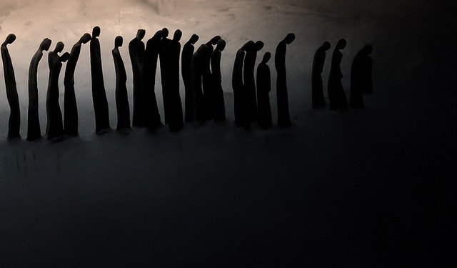

Nos sonhos da cidade Criação de personagens
por Paulo Diovani GonçalvesApesar deste capítulo se chamar de criação de personagens, você não estará propriamente criando um personagem nesta etapa, mas sim escolhendo um estereótipo pré-definido de acordo com a lista abaixo. Isto porque o único personagem que realmente fará parte da história é a Cidade, os PJs são apenas manifetações dos sonhos da Cidade.
Claro, se nenhum dos estereótipos da lista a seguir lhe parecer atraente, você pode criar seu próprio, mas tenha em mente o impacto (da função/profissão) que ele causará nos NPCs (do inglês, non player characters, ou personagens não jogadores), pois isso será relevante no jogo.

Estereótipos de personagens
| J (Valete) | Q (Dama) | K (Rei) | |
|---|---|---|---|
| ♠ (Espadas) | Legionário | Cavaleiro de ordem | Juiz |
| ♦ (Ouros) | Mercador | Criminoso/Ladrão | Nobre |
| ♣ (Paus) | Camponês | Druída | Elfo/Criatura mágica |
| ♥ (Copas) | Pescador | Pirata | Capitão (de navio/submarino) |
No começo do jogo, cada jogador (menos o mestre) deve pegar duas cartas da pilha de figuras e escolher dentre elas a que preferir para o seu estereótipo de personagem, conforme a tabela acima.
Por exemplo, um Valete (J) de Espadas (♠) representa um soldado ou policial sem muita importância, enquanto um Rei (K) de Ouros (♦) representa o Ricasso da cidade.
Escolhida a carta, dê um nome ao seu personagem (ou escolha uma alcunha, se preferir, o que importa é como chamá-lo), descreva sua aparência para os demais, e pronto.
Como usar os personagens
O estereótipo dos personagens serão relevantes tanto na narrativa como quando ocorrerem conflitos. Basicamente, cada naipe indica o tipo de ambiente em que o PJ se sairá melhor e o valor (a letra) indica o nível de influência deste sobre os NPCs e o poder dele para resolver conflitos.
Assim, um Oficial militar (Q♠) tem poder de comando sobre a milícia de uma cidade, mas não sobre outros oficiais ou o Prefeito.
♠ (Espadas)
Personagens do naipe ♠ (Espadas) são influentes em ambientes civilizados, especialmente cidades com grande avanço tecnológico.
Um personagem deste naipe tem conhecimento sobre leis, cadeia de comando e infraestrutura do local, e tem poder para prender e atuar criminosos e até resolver conflitos políticos ou sociais.
- J♠ Recebe 1 (um) dado em conflitos de caráter criminalista ou político.
- Q♠ Recebe 2 (dois) dados em conflitos de caráter criminalista ou político.
- K♠ Recebe 3 (três) dados em conflitos de caráter criminalista ou político.
♦ (Ouros)
Personagens do naipe ♦ (Ouros) são influentes no ramo de negócios e possuem conhecimento sobre recursos, moedas e rotas de comércio.
Este é o PJ que sabe barganhar, onde adquirir tal produto ou serviço e até mesmo sobre mercado negro e tráfico. É ele também que possui diversos contatos com os quais pode obter diversas informações, incluindo prostitutas e mendigos.
- J♦ Recebe 1 (um) dado em conflitos envolvendo negociação ou obtenção de informações
- Q♦ Recebe 2 (dois) dados em conflitos envolvendo negociação ou obtenção de informações
- K♦ Recebe 3 (três) dados em conflitos envolvendo negociação ou obtenção de informações
♣ (Paus)
Personagens do naipe de ♣ (Paus) são especialistas em sobrevivência em ambientes selvagens.
Também são influentes com civilações pouco evoluídas, humanas ou não-humanas e inclusive elfos e criaturas fantásticas.
- J♣ Recebe 1 (um) dado em conflitos em ambientes selvagens ou com NPCs provenientes destes
- Q♣ Recebe 2 (dois) dados em conflitos em ambientes selvagens ou com NPCs provenientes destes
- K♣ Recebe 3 (três) dados em conflitos em ambientes selvagens ou com NPCs provenientes destes
♥ (Copas)
Persoangens do naipe de ♥ (Copas) estão acostumados a viver e trabalhar sobre a água, sabendo como obter alimento e navegar.
Este personagens conhecem rotas de navegação, curso de rios e espécies marinhas em geral, até mesmo espécies inteligentes.
- J♥ Recebe 1 (um) dado em conflitos envolvendo navegação ou sobrevivência em rios e mares
- Q♥ Recebe 2 (dois) dados em conflitos envolvendo navegação ou sobrevivência em rios e mares
- K♥ Recebe 3 (três) dados em conflitos envolvendo navegação ou sobrevivência em rios e mares
As cartas restantes
Como cada jogador obteve duas cartas, sobrará uma em sua mão.
Estas cartas serão usadas para a criação da cidade onírica em que se passará a história, conforme veremos no próximo capítulo.
créditos da imagem: Light and Darkness
 Nos sonhos da cidade por Paulo Diovani Gonçalves está licenciado sob uma licença Creative Commons Atribuição – Compartilhamento pela mesma Licença (by-sa) 4.0 Internacional.
Nos sonhos da cidade por Paulo Diovani Gonçalves está licenciado sob uma licença Creative Commons Atribuição – Compartilhamento pela mesma Licença (by-sa) 4.0 Internacional.